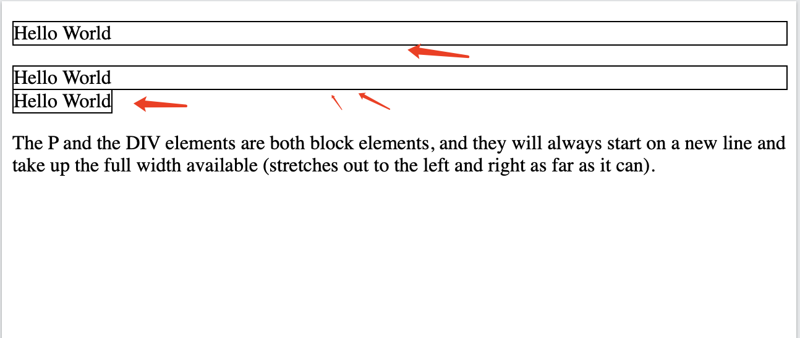

References
CSS
1. Block element vs Inline element
“Block and inline elements are different in how they behave in the document flow and how much space they occupy.”
Comparison:
Block:
- Starts on a new line.
- Takes up full width by default.
- Can contain block or inline elements.
block-level elements <div><h1><h6><header><hr><li><nav><ol><p><pre><section><table><ul><video>
Inline:
- Stays in the same line.
- Takes only as much width as needed.
- Can only contain other inline elements or text.
inline-level elements <a><b><bdo><br><button><code><i><img><input><span><strong>
Example:
|

2. How many ways to import CSS in your project
“There are four main ways to include CSS in a project, each useful in different contexts depending on structure and reusability.”
Ways:
External stylesheet:
<link rel="stylesheet" href="styles.css" />
Internal stylesheet:
<style> body { color: #333; } </style>
Inline style:
<div style="color: red;">Text</div>
@import inside CSS file:
@import url('theme.css');
3. What is the Box Model?
“The CSS Box Model defines how the size of an element is calculated, including content, padding, border, and margin.”
Structure:
- Content: The actual element data.
- Padding: Space inside the border.
- Border: Edge of the element.
- Margin: Space outside the border.
Box Model（盒模型）是 CSS 中一个核心概念，描述了元素在页面中所占空间的计算方式。它由四部分组成，从内到外依次是：
Content（内容区）
- 元素实际包含的内容（文本、图片等）。
- 由
width和height属性控制。
Padding（内边距）
- 内容区与边框之间的距离。
- 可通过
padding-top/bottom/left/right或简写属性控制。
Border（边框）
- 围绕内容区和内边距的线条。
- 由
border-width、border-style和border-color定义。
Margin（外边距）
- 元素与其他元素之间的距离。
- 可通过
margin-top/bottom/left/right或简写属性控制。
关键公式
元素的 总宽度 = width + padding-left + padding-right + border-left-width + border-right-width + margin-left + margin-right
元素的 总高度 同理。
代码示例
.box { |
总宽度计算：200px (width) + 20px×2 (padding) + 5px×2 (border) + 30px×2 (margin) = 310px
可视化示意图
+----------------------------------------+ |
补充说明
怪异盒模型（IE盒模型）
box-sizing: border-box：width和height包含内容区、内边距和边框，但不包含外边距。- 现代前端开发中常用此模式，避免计算总宽高时的复杂性。
外边距合并（Margin Collapsing）
- 相邻块级元素的垂直外边距会合并为较大的一个，需特别注意。
掌握盒模型是理解 CSS 布局的基础，它直接影响元素的大小和位置计算。
4. Margin vs Padding
“Margin and padding both add space, but margin is outside the border and padding is inside it.”
Comparison:
Margin:
- Adds space outside the element.
- Affects spacing between elements.
Padding:
- Adds space inside the element.
- Increases space between content and border.
Example:
.box { |
5. FlexBox vs Grid
“Flexbox and Grid are layout models in CSS used to align and distribute space, but they serve different layout needs.”
Comparison:
Flexbox:
- One-dimensional: row or column.
- Best for aligning items dynamically.
Example:
display: flex;
justify-content: space-between;适合用来做局部布局, 比如导航卡片:
Grid:
- Two-dimensional: rows and columns.
- Best for building structured layouts.
Example:
display: grid;
grid-template-columns: repeat(3, 1fr);适合用来做全局排版, 比如后台管理 / 九宫格排版:
6. What is responsive web design? How to achieve this?
“Responsive web design ensures a website looks and works well on all screen sizes using flexible layouts, media queries, and relative units.”
Techniques:
Media queries to adjust styles:
@media (max-width: 600px) {
.container { flex-direction: column; }
}Percentages or
vw/vhunits.vw（Viewport Width）：表示视口宽度的百分比。1vw等于视口宽度的 1%。例如，如果视口宽度为 1000px，那么 10vw就等于 100px。vh（Viewport Height）：表示视口高度的百分比。1vh等于视口高度的 1%。例如，在一个高度为 800px 的视口内，20vh就是 160px。vw和vh单位在响应式设计中非常有用，它们可以使元素的尺寸随着视口的大小变化而自动调整，从而提供更好的用户体验。例如，一个占满整个视口宽度的导航栏可以设置为宽度 100vw，这样无论用户如何调整浏览器窗口大小，导航栏都能始终保持在屏幕顶部并占据全部宽度。
- Flexbox/Grid for flexible layout.
- Responsive images using
max-width: 100%.
7. What is SCSS?
SCSS (Sassy漂亮的 CSS) is a CSS preprocessor syntax that extends regular CSS with powerful features like:
- Variables
- Nesting
- Mixins
- Functions
- Inheritance
- Math operations
SCSS makes large stylesheets easier to maintain, more reusable, and more readable.
SCSS vs. CSS
Plain CSS:
button { |
SCSS:
$primary-color: blue; |
How to Use SCSS
- File extension:
.scss - Requires a compiler (like
sass, Webpack, Vite, etc.) to turn SCSS into standard.css
Example using CLI:
sass styles.scss styles.css |
Why Use SCSS?
| Feature | Benefit |
|---|---|
| Variables | Centralize color, spacing, etc. |
| Nesting | Clean, HTML-like hierarchy |
| Mixins | Reuse groups of rules easily |
| Functions | Custom logic in styles |
| Partials | Modularize large stylesheets |
JavaScript
8. What is the JavaScript engine
“The JavaScript engine is the part of the browser or runtime that parses, compiles, and executes JavaScript code.”
Examples:
- Chrome → V8
- Node.js → V8
- Firefox → SpiderMonkey
- Safari → JavaScriptCore
Characteristics of V8 compiling JavaScript:
- “V8 compiles JavaScript to machine code” means that V8 translates JavaScript code into machine code.
- Traditionally, JavaScript is an interpreted language, and V8 employs Just In Time (JIT) compilation technology.
- When JavaScript code runs, V8 compiles some frequently executed code (hotspot code) into machine code, which is then executed directly on the computer’s CPU.
- This significantly enhances the execution speed of the code. Compared with interpreted execution, the execution efficiency of code compiled into machine code is much higher, enabling the Chrome browser to exhibit excellent performance when running JavaScript code.
9. What is REPL?
“REPL stands for Read-Eval-Print-Loop; it’s an interactive environment to run JavaScript commands one at a time.”
Steps:
- Read the input.
- Evaluate the expression.
- Print the result.
- Loop back for next input.
Example:
$ node |
10. Primitive data types vs Reference data types
“In JavaScript, primitive types store actual values, while reference types store memory addresses pointing to objects.”
Comparison:
Primitive types:
string,number,boolean,null,undefined,symbol,bigint- Stored directly
Reference types:
object,array,function- Stored by reference (in heap)
Example:
let a = 10; // primitive |
11. Type coercion vs Type conversion
“Type coercion (
/ koʊˈɜːrʒn /, n.强迫，胁迫；高压政治，威压) happens implicitly when JavaScript automatically changes a value’s type, while type conversion is when we do it explicitly using built-in methods.”
Comparison:
Type coercion (implicit):
'5' * 2 // → 10 (string coerced to number)
'5' + 2 // → '52' (number coerced to string)Type conversion (explicit):
Number('123') // → 123
String(123) // → '123'
Boolean(0) // → false
'5' * 2
- Here, the string
'5'is multiplied by the number2. - In JavaScript, the
*operator is only defined for numbers. So, before performing the multiplication, JavaScript coerces the string'5'into a number. '5'becomes5(number), and then5 * 2gives10(number).- Result:
10
'5' + 2
- Here, the
+operator is used, which is defined for both strings and numbers in JavaScript. - When one of the operands is a string, JavaScript coerces the other operand to a string and performs string concatenation.
'5'(string) is concatenated with2(which is coerced to'2'as a string).- Result:
'52'(string)
12. What is the difference between == and ===
“
==compares values with type coercion, while===compares both value and type strictly.”
Comparison:
== (loose equality):
'5' == 5 // → true
null == undefined // → true=== (strict equality):
'5' === 5 // → false
null === undefined // → false
“Always prefer
===to avoid unexpected coercion.”
In JavaScript, == and === are both comparison operators, but they have a key difference in how they handle type coercion.
== (Loose Equality / Abstract Equality)
- Performs type coercion: When you use
==, JavaScript attempts to convert the values to the same type before comparing them. - This means that if the values being compared are of different types, JavaScript will try to coerce them into the same type.
Example:
'5' == 5 // → true (string '5' is coerced into the number 5) |
=== (Strict Equality)
- Does not perform type coercion:
===checks both the value and the type, meaning both must be the same for the comparison to returntrue. - If the values being compared are of different types, it will return
falseimmediately, without attempting to coerce them.
Example:
'5' === 5 // → false (different types: string vs number) |
Key Difference:
==: Allows type coercion, so1 == '1'would betruebecause'1'is coerced into a number.===: No type coercion, so1 === '1'would befalsebecause1is a number and'1'is a string.
Best Practice:
- Use
===(strict equality) to avoid unexpected results from type coercion, as it ensures both the value and type match. This is generally safer and more predictable in your code.
13. What is short-circuit evaluation
“Short-circuit evaluation is when logical operators stop evaluating as soon as the result is determined.”
Examples:
AND (
&&): stops if the first value is falsyfalse && anything // → false
OR (
||): stops if the first value is truthytrue || anything // → true
Practical Use:
const name = userInput || 'Guest'; |
14. What is the difference between var, let and const
@see /na_js_frontend_syllabus/#misc-Q
“
varis function-scoped and hoisted, whileletandconstare block-scoped withconstbeing read-only after declaration.”
Comparison:
var:
- Function scope
- Can be re-declared
- Hoisted with
undefined
let:
- Block scope
- Cannot be re-declared in same scope
- Hoisted but not initialized
const:
- Block scope
- Must be initialized
- Cannot be reassigned
Example:
{ |
函数作用域Function Scope
var声明的变量仅在其所在的函数内有效。- 它不会受块级作用域控制（例如
if,for,while,{}中仍然属于外层函数作用域）。
function test() { |
全局作用域Global Scope
- 如果你在函数外用
var声明变量，它会变成 全局变量（绑定在window或global对象上）。
var y = 20; |
16. Pass by value vs pass by reference
In JavaScript:
- primitives are passed by value,
- objects are passed by reference.
Comparison:
Pass by value:
- Copy of value is passed
- Changes don’t affect original
let a = 1;
function change(x) { x = 2; }
change(a); // a is still 1Pass by reference:
- Reference to memory is passed
- Changes affect original
let obj = { x: 1 };
function update(o) { o.x = 2; }
update(obj); // obj.x is 2
17. How many ways to define a function?
“There are three main ways to define a function in JavaScript, and each has different scoping and behavior characteristics.”
Ways:
Function Declaration:
function greet() {}
Function Expression:
const greet = function() {};
Arrow Function:
const greet = () => {};
“Arrow functions don’t bind their own
this, which makes them great for callbacks.”
18. Set vs Array
“A Set is a collection of unique values, while an Array can contain duplicates and maintains order by index.”
Comparison:
Set:
- Unique values
- No index access
- Useful for filtering duplicates
let mySet = new Set([1, 2, 2, 3]); // → {1, 2, 3}
// 如果你要遍历的是对象（{}），用 for...in；
// 如果是集合（如 Set、Array、Map），用 for...of 或者 forEach
// for .. of:
for (const value of mySet) {
console.log(value); // 正确输出集合元素
}
// forEach:
const mySet = new Set(['a', 'b', 'c']);
mySet.forEach((value) => {
console.log(value);
});Array:
- Ordered list
- Allows duplicates
- Indexed access
let ccd = [1, 2, 2, 3] // → [1, 2, 2, 3]
let mmp = new Array("tt", "ss", "gg");
console.log(mmp[0]);
19. Map vs Object
“Maps and Objects both store key-value pairs, but Maps offer better performance and flexibility when keys are not strings.”
Comparison:
Map:
- Any type as key
- Ordered
- Size can be checked
const map = new Map();
map.set('a', 1).set(2, 'b');
const map = new Map([
['name', 'Alice'],
['age', 30]
]);
for (const [key, value] of map) {
console.log(key, value);
}
map.forEach((value, key) => {
console.log(key, value);
});
// 遍历键
for (const key of map.keys()) {
console.log(key);
}
// 遍历值
for (const value of map.values()) {
console.log(value);
}
// 遍历键值对（与默认一样）
for (const [key, value] of map.entries()) {
console.log(key, value);
}Object:
- Only strings or symbols as keys
- Unordered
const obj = { a: 1 };
const person = {
name: 'Alice',
age: 30,
};
for (const key in person) {
console.log(key, person[key]);
}
// 输出：
// name Alice
// age 30
22. What is a first-class function
“A first-class function is a function treated like any other value, meaning it can be passed as an argument, returned from another function, and assigned to a variable.”
Assigning to a variable
const greet = function(name) { |
Passing as an argument
function callTwice(fn) { |
Returning from another function
function multiplier(factor) { |
Storing in objects or arrays
const toolbox = { |
23. What is a first-order function
“A first-order function is a function that doesn’t accept another function as an argument and doesn’t return one either.”
Example:
function add(a, b) { |
24. What is a higher-order function
“A higher-order function is any function that takes one or more functions as arguments or returns another function.”
Example:
function withLogging(fn) { |
25. What is a pure function
“A pure function always returns the same output given the same input and has no side effects like modifying global state or I/O.”
Example:
function add(a, b) { |
“Pure functions are predictable, easier to test, and crucial for functional programming.”
27. What is “use strict”
“
'use strict'is a directive that enables strict mode in JavaScript, which helps catch common coding mistakes and disables some unsafe features.”
Example:
; |
“It’s recommended to use strict mode to write cleaner, more secure code.”
28. What are the different types of scopes
“JavaScript has global scope, function scope, block scope, and module scope introduced with ES6 modules.”
Scopes:
- Global scope: declared outside any function/block
- Function scope: created with
function - Block scope: created by
{}withletorconst - Module scope: variables inside ES modules aren’t accessible globally
Example:
let globalVar = 1; |
29. What is hoisting
“Hoisting is JavaScript’s behavior of moving variable and function declarations to the top of their scope before code execution.”
Examples:
console.log(a); // undefined |
“
letandconstare hoisted too, but they stay in a ‘temporal dead zone’ and can’t be accessed before declaration.”
30. What is the scope chain?
“The scope chain is the hierarchy that JavaScript uses to resolve variables, starting from the innermost scope and going up to the global scope.”
Example:
let a = 1; |
“When a variable isn’t found in the current scope, JS looks up through outer scopes until it finds it or reaches global.”
31. What is a closure?
“A closure is created when a function retains access to variables from its outer lexical scope even after the outer function has returned.”
Example:
function outer() { |
“Closures are useful for data privacy and creating stateful functions.”
32. What is currying?
“Currying(柯里化) is a technique where a function with multiple arguments is transformed into a sequence of functions each taking a single argument.”
Example:
function add(a) { |
“It allows partial application and can improve function reusability.”
33. What is an IIFE?
“An IIFE (Immediately Invoked Function Expression) is a function that runs as soon as it is defined, mainly used to create a private scope.”
Example:
(function () { |
or(() => {
console.log('Arrow IIFE');
})();
Why use an IIFE?
| Purpose | Explanation |
|---|---|
| Avoid polluting global scope | Variables inside the IIFE are scoped locally |
| Create a private namespace | Ideal for module-like encapsulation |
| Run code immediately | Great for init tasks or setup code that only needs to run once |
Breakdown:
(function() { ... })() |
- Outer parentheses
()turn the function into an expression - Final
()immediately invoke the function
34. Name the new ES6 features
“ES6 introduced many features that improved JS readability and performance.”
Key features:
letandconst- Arrow functions (
=>) - Template literals:
`Hello ${name}` Destructuring:
const numbers = [1, 2, 3];
const [a, b, c] = numbers;
console.log(a);
console.log(b);
console.log(c);const person = {
firstName: 'Jane',
lastName: 'Doe',
age: 25
};
const { firstName, lastName, age } = person;
console.log(firstName);
console.log(lastName);
console.log(age);
Spread/rest:
...args- Default parameters
- Classes
- Promises
- Modules (
import/export) MapandSet
Spread Syntax (...)
The spread syntax is used when you want to expand an iterable (like an array or object) into individual elements.
Example: Spread with Arrays
const arr1 = [1, 2, 3]; |
Example: Spread with Objects
const obj1 = { name: 'Alice', age: 30 }; |
Rest Syntax (...)
The rest syntax is used when you want to collect multiple elements into an array (or object) as the last argument in a function.
Example: Rest in Function Parameters
function sum(...numbers) { |
In this case, the ...numbers collects all the arguments passed into the function into an array.
Example: Rest with Destructuring
const [first, ...rest] = [1, 2, 3, 4]; |
Example: Rest in Object Destructuring
const obj = { name: 'Alice', age: 30, job: 'Engineer' }; |
35. What is Object-Oriented Programming (OOP)?
“OOP is a programming paradigm based on the concept of objects that encapsulate data and behavior.”
Main principles: PIEA
- Polymorphism: Same interface, different behavior
- Inheritance: Reuse behavior
- Encapsulation: Hide internal state
- Abstraction: Expose essential features only
36. What does ‘this’ refer to?
“
thisrefers to the object that is executing the current function, and its value depends on how the function is called.”
Summary Table
| Context | this refers to |
|---|---|
| Global function (non-strict) | window or global |
| Method of object | That object |
| Arrow function | Lexical (outer) this |
| DOM event handler (function) | The DOM element |
call / apply / bind |
Explicitly set context |
Constructor (new) |
The new object being constructed |
Global Context (non-strict mode)
console.log(this); // → window (in browsers) |
Inside a Function
- Non-strict mode:
thisis the global object (window) - Strict mode:
thisisundefined
function test() { |
Inside a Method (Object Function)
const obj = { |
Here,
thisrefers toobj.
Arrow Functions
Arrow functions do not have their own this. They inherit this from their surrounding lexical scope.
const obj = { |
In Event Handlers (DOM)
document.querySelector('button').addEventListener('click', function() { |
Use
function, not arrow function, if you wantthisto refer to the element.
With call, apply, bind
You can explicitly set this:
function sayHello() { |
37. Differences between call, apply & bind
“They all change the
thiscontext of a function, but they behave slightly differently.”
Comparison:
call: calls function immediately withthisand argumentsfn.call(context, arg1, arg2);
apply: same as call, but arguments as an arrayfn.apply(context, [arg1, arg2]);
bind: returns a new function withthisbound, not invokedconst boundFn = fn.bind(context, arg1, arg2);
boundFn();summary:
summary.js // 定义 Person 对象
const Person = {
introduce: function (hobby, occupation) {
console.log(`My name is ${this.name}, I'm ${this.age} years old. I like ${hobby}, and I'm a ${occupation}.`);
}
};
// 定义 Student 对象
const Student = {
name: 'Alice',
age: 20
};
// 使用 call 方法
Person.introduce.call(Student, 'reading', 'student');
// 使用 apply 方法
Person.introduce.apply(Student, ['swimming', 'student']);
// 使用 bind 方法1
const boundFunc1 = Person.introduce.bind(Student, "running");
boundFunc1("teacher");
// 使用 bind 方法2
const boundFunc2 = Person.introduce.bind(Student, "walking", "walker");
boundFunc2();
// print:
// My name is Alice, I'm 20 years old. I like reading, and I'm a student.
// My name is Alice, I'm 20 years old. I like swimming, and I'm a student.
// My name is Alice, I'm 20 years old. I like running, and I'm a teacher.
// My name is Alice, I'm 20 years old. I like walking, and I'm a walker.
38. What does the event loop do?
“The event loop is what allows JavaScript to handle async operations non-blockingly by moving tasks between the call stack and the task queue.”
How it works:
- Executes sync code first
- Queues async callbacks (like
setTimeout, Promises) - Continuously checks the call stack and task/microtask queue
- Pushes ready callbacks to the stack when it’s empty
“It’s how JavaScript achieves concurrency despite being single-threaded.”
39. What is a Promise? How many states does it have?
“A Promise is a JS object representing the eventual result of an async operation, and it has three states.”
Example:
const promise = new Promise((resolve, reject) => { |
States:
| State | Meaning |
|---|---|
| Pending | Initial state; neither fulfilled nor rejected |
| Fulfilled | Operation completed successfully (calls resolve) |
| Rejected | Operation failed (calls reject) |
“We use
.then()for success,.catch()for errors, and.finally()for cleanup.”
// example1 |
40. What is callback hell?
“Callback hell happens when nested callbacks grow out of control, making the code hard to read and maintain.”
Example:
doA(() => { |
“We avoid this by using Promises or async/await to flatten async logic.”
41. What is async & await?
“
asyncandawaitare syntactic sugar over Promises that allow writing asynchronous code in a synchronous-looking way.”
Example:
async function fetchData() { |
“They help improve readability and error handling in asynchronous logic.”
42. What are ES6 modules?
“ES6 modules allow us to split JavaScript code into reusable files using
importandexportsyntax.”
Example:
math.js :export function add(a, b) { return a + b; }
app.js :import { add } from './math.js';
“ES6 modules are static, support tree-shaking, and are preferred over CommonJS for frontend development.”
ES6 Modules vs commonJS
| Feature | ES6 Modules (import/export) |
CommonJS (require/module.exports) |
|---|---|---|
| Static structure | Yes — imports are resolved at compile time | No — imports are dynamic, resolved at runtime |
| Tree-shaking | Supported — unused exports can be removed | Not supported — bundlers can’t easily eliminate dead code |
| Async loading | Native support via import() |
Not natively — requires bundler tricks |
| Browser support | Native in modern browsers | Not natively supported in browsers |
| Use case | Preferred for frontend | Mostly used in Node.js/backend |
Why Static Structure Matters
Static imports mean the module structure is known before execution, allowing tools like:
- Bundlers (e.g., Webpack, Rollup)
- Optimizers (e.g., Terser)
- Linters & Type checkers
to better analyze dependencies, remove unused code (tree-shaking), and produce smaller, faster builds.
ES6 Module
// math.js |
CommonJS
// math.js |
Summary
- Use ES6 modules (
import/export) for all modern frontend projects. - They’re more efficient, better supported by modern tooling, and future-proof.
- CommonJS is still important for Node.js and legacy projects, but not ideal for browser environments.
43. What is the purpose of the finally() method in a Promise chain?
“The
finally()method runs after a Promise is settled, regardless of whether it was fulfilled or rejected.”
Example:
fetch('/api') |
“It’s mainly used for cleanup logic like hiding loaders or closing connections.”
44. async/await vs Promise
| Feature | Promises | async/await |
|---|---|---|
| Syntax | .then() chaining |
Looks like synchronous code |
| Error handling | .catch() |
try/catch |
| Readability | Can get nested | Cleaner, easier to follow |
Example using async/await:
async function run() { |
“I prefer async/await for cleaner logic and easier error handling.”
45. What is promise chaining
“Promise chaining is the process of executing multiple async operations in sequence by returning a Promise from each
.then().”
Example:
Promise.resolve() |
“It helps maintain a predictable sequence of asynchronous tasks.”
55. What is DRY?
“DRY stands for ‘Don’t Repeat Yourself’ — a principle that encourages reducing duplication by abstracting common logic into functions or modules.”
Example:
// 重复：两个函数逻辑几乎相同 |
“It improves maintainability and reduces bugs caused by duplicated logic.”
TypeScript
92. JavaScript vs TypeScript
| Feature | JavaScript | TypeScript |
|---|---|---|
| Type System | Dynamic typing | Static typing |
| Compilation | Interpreted at runtime | Compiled to JavaScript |
| Error Checking | Errors occur at runtime | Errors caught at compile-time |
| Tooling | Limited IDE support | Enhanced IDE support, autocompletion |
“TypeScript provides static typing, offering better tooling and compile-time error checking, which improves developer productivity.”
93. What is static type checking? How can developers benefit from it?
“Static type checking refers to verifying the types of variables and expressions at compile-time, rather than at runtime.”
Benefits:
- Catch type-related errors early
- Improve code readability and maintainability
- Enable better tooling support (e.g., autocompletion, refactoring)
“It helps prevent bugs and makes the development process smoother, especially in large codebases.”
94. What are enums?
“Enums (short for ‘enumerations’) are a way to define a set of named constants, often used to represent discrete options or categories.”
Example:
enum Status { |
“Enums improve code readability by using descriptive names instead of raw values like strings or numbers.”
95. What are generics?
“Generics allow you to create reusable components or functions that work with different data types, without losing type safety.”
Example:
function identity<T>(arg: T): T { |
“They provide flexibility while maintaining type safety, making your code more reusable and type-safe.”
What Are Generics
JavaScript does not have native support for generics because it is a dynamically typed language. However, TypeScript — a superset of JavaScript — does support generics. Generics let you write flexible, reusable code that is type-safe at compile time.
Example in TypeScript
function identity<T>(value: T): T { |
This function accepts and returns a value of the same type T. You can call it like this:
identity<number>(123); |
Common Use Cases
Generic function
function wrapInArray<T>(value: T): T[] { |
Generic interface
interface ApiResponse<T> { |
Generic class
class Box<T> { |
Equivalent Thinking in JavaScript
In JavaScript, although you don’t have generics, you can write functions that behave generically:
function identity(value) { |
This works for any type at runtime, but there’s no static type enforcement.
Summary
| Feature | JavaScript | TypeScript |
|---|---|---|
| Generic support | Not supported | Fully supported |
| Type safety | None (dynamic only) | Enforced at compile time |
| Use cases | Simple utilities, scripts | Libraries, APIs, type-safe code |
HTML DOM
20. What is the DOM? What is a DOM event?
“The DOM is the browser’s in-memory tree representation of HTML, and a DOM event is an interaction like a click or key press that triggers event handlers.”
Examples of DOM interaction:
document.getElementById('btn').addEventListener('click', () => { |
“You can use methods like
querySelector,appendChild, orsetAttributeto manipulate the DOM dynamically.”
21. Event propagation vs Event delegation
- Event propagation: describes how events move through the DOM in either
bubblingorcapturingphase, - event delegation: is a technique where a parent handles events from its children using propagation.
Comparison:
Event propagation:
- Capturing: from
windowdown to target,- Use capturing only when you need to intercept the event before it reaches its target
- Bubbling: from target up to
window parent.addEventListener('click', handler, true); // Capturing
parent.addEventListener('click', handler); // Bubbling (default)如果你只在冒泡阶段注册监听器，事件在捕获阶段就不会触发该监听器，反之亦然。
- Capturing: from
Event delegation:
- Uses bubbling to listen on a common ancestor, and use event.target to detect which child was clicked, so you can use fewer event listeners.
document.getElementById('list').addEventListener('click', (e) => {
if (e.target.tagName === 'LI') {
console.log('Clicked item:', e.target.textContent);
}
});
Event Propagation
Event propagation describes how events travel through the DOM. It has three phases:
- Capturing Phase: The event travels from the
windowdown to the target element. - Target Phase: The event reaches the target element itself.
- Bubbling Phase: The event bubbles back up from the target to the
window.
Example:
document.body.addEventListener('click', () => { |
If you click the button:
- It triggers the button’s listener first (during bubbling),
- Then the body’s listener (unless propagation is stopped).
You can control this flow with:
event.stopPropagation() |
Event Delegation
Event delegation is a pattern that uses event propagation (specifically bubbling) to handle events more efficiently.
Instead of adding listeners to multiple child elements, you add one listener to a common parent, and use event.target to detect which child was clicked.
Example:
document.getElementById('list').addEventListener('click', (e) => { |
Benefits:
- Fewer event listeners.
- Works even if elements are added dynamically later.
Summary
| Concept | Description |
|---|---|
| Event Propagation | Describes how events move through the DOM (capture → target → bubble) |
| Event Delegation | Uses bubbling to handle many child events from one parent listener |
Want a diagram or sample use case in a frontend component?
26. Event bubbling vs Event capturing
“Event bubbling means the event starts from the target element and moves up the DOM tree, while capturing means the event starts at the top and goes down to the target.”
Comparison:
Bubbling (default):
div.addEventListener('click', () => {}, false); // or omit third param
Capturing:
div.addEventListener('click', () => {}, true);
“Use capturing only when you need to intercept the event before it reaches its target.”
React
60. React vs Angular
| React | Angular | |
|---|---|---|
| Type | Library (UI-focused) | Full-fledged framework |
| Language | JavaScript + JSX | TypeScript |
| Learning Curve | Easier | Steeper |
| Flexibility | More freedom with libraries | More opinionated |
“I prefer React for its flexibility and ecosystem, especially when building component-driven UIs.”
61. What is a SPA?
“A SPA, or Single Page Application, is a web app that loads a single HTML page and dynamically updates the content without refreshing the page.”
Key Points:
- Faster navigation via JavaScript routing
- Loads initial page once, then updates via API
- Examples: Gmail, Facebook, React apps
React Router Example:
<Route path="/profile" element={<Profile />} /> |
“SPAs improve user experience but need careful handling of SEO and routing.”
62. What is JSX?
“JSX is a syntax extension for JavaScript that looks like HTML and is used to describe what the UI should look like in React.”
Example:
const element = <h1>Hello, world!</h1>; |
Benefits:
- Easier UI declaration
- Combines logic and markup
- Compiled by Babel to
React.createElement
“It makes writing UI more intuitive while still being fully JavaScript.”
63. What do we use Babel and Webpack for in React applications?
“Babel transpiles modern JavaScript and JSX into compatible JS for browsers, while Webpack bundles all assets and modules into optimized files.”
Babel:
- Converts JSX to JS
- Enables ES6+ syntax in older browsers
Webpack:
- Bundles JS, CSS, images, etc.
- Supports plugins/loaders for custom builds
“Together, they form the backbone of a modern React development workflow.”
64. What is state, and how do you update it?
“State is a built-in object in React components that stores dynamic data which, when changed, triggers a re-render.”
Example (Functional):
const [count, setCount] = useState(0); |
Rules:
- Do not modify state directly (
state = newValue) - Use
setStateoruseState‘s setter
“Managing state properly is key to ensuring UI stays in sync with data.”
65. Shadow DOM vs Virtual DOM
| Feature | Shadow DOM | Virtual DOM |
|---|---|---|
| Purpose | Provides encapsulation and isolation of component content and styles. | Optimizes rendering by minimizing direct DOM updates. |
| How It Works | Creates an independent subtree (shadow root) with its own DOM and styles. | Creates a virtual representation of the DOM in memory and compares differences. |
| External Impact | Styles and DOM inside the shadow root are isolated from the global document. | Optimizes DOM updates, but doesn’t encapsulate styles or DOM structure. |
| Use Case | Web Components (e.g., custom elements). | React, Vue, and other frameworks for performance improvement. |
| Style Isolation | Provides complete style isolation from the global document. | Does not deal with style isolation, only focuses on DOM updates. |
Shadow DOM is a browser feature that allows developers to create an encapsulated subtree of DOM elements within an element.
This subtree is isolated from the main DOM and has its own styles and behaviors, helping avoid conflicts with external styles or JavaScript. Shadow DOM is mostly used in Web Components.
shadow dom example:
<my-element></my-element> |
在这个例子中，<my-element> 中的内容被封装在 Shadow DOM 中，它的样式不会影响到其他地方的 <p> 标签。
“Shadow DOM is for encapsulating styles in custom elements, while Virtual DOM optimizes rendering in libraries like React.”
66. Explain the diffing algorithm? How do keys play a role?
“React’s diffing algorithm efficiently compares the Virtual DOM with the previous one and updates only the changed parts using a heuristic based on element type and keys.”
What is the Diff Algorithm?
React’s diff algorithm is an optimization strategy designed to efficiently compare two Virtual DOM trees (before and after a state/props change) and apply the minimal necessary updates to the actual DOM.
Basic process:
- React generates a new Virtual DOM after a state or prop change.
- It compares the new Virtual DOM with the previous one using heuristics.
- React applies only the necessary changes to the real DOM, avoiding full re-renders.
Core Heuristics (/ hjuˈrɪstɪks/ n. 启发法；启发式教学法):
To make diffing fast, React uses several assumptions:
- Elements of different types → The entire subtree is replaced.
- Same type → Only attributes and children are compared recursively.
- For lists, React uses the
keyprop to track element identity across renders.
Why is key important?
In lists, the key serves as a unique identifier for each element. It tells React which items changed, were added, or were removed, and helps it reuse elements rather than re-rendering them unnecessarily.
Correct usage:
const items = [ |
Incorrect usage (using index as key):
{items.map((item, index) => ( |
Using index as a key can cause misidentification of changes, especially when the list is reordered, leading to state leaks, UI glitches, or performance hits.
With vs. Without Key (When Updating Lists)
| Case | With Key | Without Key (or index) |
|---|---|---|
| Reordering | Tracks elements precisely | May confuse React, re-rendering incorrectly |
| Deletion | Removes the correct item | May leave stale state in DOM |
| Performance | Minimal updates | May re-render unchanged items |
| State retention | Preserved | May be lost |
Conclusion:
- React’s diff algorithm is designed for performance through structural assumptions and efficient matching.
keyplays a critical role in identifying elements, especially in lists.- Avoid using
indexas a key unless the list is static and never changes. - A correct
keyensures correct DOM updates and better runtime performance.
Would you like a visual illustration or code experiment to deepen this?
67. How to use styles in React?
“In React, styles can be applied using CSS files, inline styles, CSS Modules, or styled-components depending on the need.”
Options:
External CSS
import './App.css';
Inline
<div style={{ color: 'red' }}></div>
CSS Modules
import styles from './App.module.css';
<div className={styles.container}></div>Styled Components
const Button = styled.button`color: red;`;
“I choose the method based on reusability, scoping, and maintainability.”
68. What are the new changes in React 18?
“React 18 introduced automatic batching, concurrent rendering, and new hooks like
useTransitionanduseDeferredValuefor better performance.”
Major Features:
- Concurrent rendering via
createRoot() - Automatic batching of updates
startTransition()for non-blocking UIuseId()for consistent IDs
“These changes improve UX and performance in complex apps.”
React 18 introduced several major features and architectural changes focused on improving performance and enabling concurrent rendering. Here’s a concise breakdown of the most important additions:
Concurrent Rendering (Foundational Change)
React 18 introduced a new rendering engine behind the scenes that allows React to interrupt rendering work and continue it later. This enables smoother user interfaces and more responsive apps.
Note: You opt into concurrent rendering only when using concurrent features, like
startTransition,Suspense, oruseDeferredValue.
Key Features in React 18
Automatic Batching
Multiple state updates in async events are now batched by default, reducing unnecessary re-renders.
// In React 17: causes two renders |
createRoot() API
To use concurrent features, you must replace ReactDOM.render with ReactDOM.createRoot:
const root = ReactDOM.createRoot(document.getElementById('root')); |
useId
在一些场景下，React 组件中的元素（如表单控件）需要使用唯一的 id。如果你在组件中手动生成 id，在服务器端渲染和客户端渲染时可能会出现不同的结果，因为每次渲染时生成的 ID 可能不同。为了保证一致性，useId 提供了一种稳定的方式来生成跨渲染周期一致的 id。
useId 是一个用于生成唯一 ID 的 React 钩子。它的主要用途是生成跨渲染保持一致的唯一 ID，特别适用于需要在多个渲染周期中保持一致的 ID，如表单元素的 id 属性、aria 属性等。
- 用途: 当你需要为多个元素生成唯一且一致的 ID 时，
useId会为你处理这一需求，确保即使在服务器端渲染时也能正确生成唯一 ID，避免了 SSR 和客户端渲染时 ID 的不一致问题。
示例：
import { useId } from 'react'; |
在这个例子中，useId 生成的 ID 会在组件的整个生命周期内保持一致，从而避免了客户端渲染和服务器端渲染之间的 ID 不匹配问题。
startTransition
startTransition 是 React 18 引入的一个 API，用于标记某些更新是“过渡更新”。它的主要用途是帮助 React 更好地处理低优先级更新，避免影响高优先级更新的性能。
- 用途: 在某些情况下，React 会有很多状态更新，比如数据加载、动画、UI 更新等。
startTransition允许你把一些更新标记为过渡性更新，React 会尽量让这些更新异步处理，不阻塞用户的互动体验。
startTransition 适用于那些不需要立即更新的 UI 状态，比如动画、列表渲染等。
示例：
import { useState, startTransition } from 'react'; |
在这个示例中，startTransition 用来标记状态更新为低优先级的任务，这样 React 就可以优先处理用户交互的高优先级更新。
69. Explain the React component lifecycle and its methods.
“React class components have lifecycle methods that run at specific stages of a component’s life, like mounting, updating, and unmounting.”
useEffect Hook
The useEffect hook is used for side effects in functional components, similar to componentDidMount, componentDidUpdate, and componentWillUnmount in class components. You can control when useEffect runs by providing dependency arrays.
componentDidMount: To run an effect once when the component is first mounted, provide an empty dependency array
[]:useEffect(() => {
// This will run only once after the component mounts
}, []);componentDidUpdate: To run an effect every time the component updates, without dependency array or with dependencies:
useEffect(() => {
// This will run on every render (component update), if we omit the dependency array
});useEffect(() => {
// This will run when a or b changes
}, [a, b]);componentWillUnmount: To perform cleanup when the component unmounts, return a cleanup function from the
useEffectcallback:useEffect(() => {
// Setup code (e.g., event listeners or subscriptions)
return () => {
// Cleanup code (e.g., removing event listeners)
};
}, []);
Comparison of Lifecycle Methods
| Lifecycle Phase | Class Component | Functional Component (Hooks) |
|---|---|---|
| Mounting | constructor(), getDerivedStateFromProps(), render(), componentDidMount() |
useEffect() (with an empty dependency array) |
| Updating | getDerivedStateFromProps(), shouldComponentUpdate(), render(), getSnapshotBeforeUpdate(), componentDidUpdate() |
useEffect() (without dependency array or with dependencies) |
| Unmounting | componentWillUnmount() |
useEffect() (cleanup function) |
| Error Handling | getDerivedStateFromError(), componentDidCatch() |
Not directly available in hooks, use ErrorBoundary components |
Summary
- Class components use lifecycle methods like
componentDidMount,componentDidUpdate, andcomponentWillUnmount. - Functional components use hooks like
useEffectanduseLayoutEffectto achieve similar lifecycle behaviors, but without the need for class syntax.
For most modern React applications, functional components with hooks are preferred because of their simplicity and reusability. However, class components are still widely used, especially in legacy codebases.
70. What is React Strict Mode?
“React Strict Mode is a development tool that highlights potential problems in an app, like unsafe lifecycles or deprecated patterns.”
Usage:
<React.StrictMode> |
Key Features:
- Detects side effects
- Warns about legacy methods
- Double-invokes certain functions to detect bugs
“It doesn’t affect production but helps improve code quality during development.”
71. Controlled component vs uncontrolled component
“In React, controlled components are driven by state, while uncontrolled components use refs to access DOM values directly.”
Summary Table
| Feature | Controlled | Uncontrolled |
|---|---|---|
| Value Source | React state | DOM (via ref) |
| Update Trigger | onChange + setState |
Direct DOM input |
| Validation | Easy (during input) | Manual (on submit) |
| Use Case | Dynamic forms, validations | Simple or legacy forms |
Recommendation:
Use controlled components in most cases for consistency, validation, and easier state management. Use uncontrolled components when you want minimal code or are integrating with non-React code (e.g., file uploads, third-party widgets).
Controlled Component
A controlled component is an input element whose value is controlled by React state.
Key Features:
- Value comes from React state (
useState,this.state) - You must handle
onChangeevents to update the state - Source of truth: React
Example:
function ControlledInput() { |
Pros:
- Easy to validate and format input
- Centralized control for complex forms
- Predictable and testable
Cons:
- More code
- Frequent re-renders (on each keystroke)
Uncontrolled Component
An uncontrolled component uses the DOM itself to manage the input value.
Key Features:
- Value is managed by the DOM, not React
- Use
refto read the value when needed - Source of truth: DOM
Example:
function UncontrolledInput() { |
Pros:
- Less boilerplate for simple forms
- Slightly better performance for large forms
Cons:
- Harder to validate in real-time
- Less React-idiomatic and harder to manage in complex forms
72. What are error boundaries? How are they useful?
“Error boundaries are React components that catch JavaScript errors in child components during rendering and display fallback UIs.”
Example:
Only class components can be error boundaries (as of now):class ErrorBoundary extends React.Component {
componentDidCatch(error, info) { /* log */ }
render() {
return this.state.hasError ? <h1>Something went wrong.</h1> : this.props.children;
}
}
Usage Example:<ErrorBoundary>
<MyComponent />
</ErrorBoundary>
Use Cases:
- Prevent whole app crashes
- Wrap around unreliable components
“They enhance resilience(
/rɪˈzɪliəns/n. 恢复力，复原力；（橡胶等的）弹性) by isolating errors to specific parts of the component tree.”
73. What is Lifting State Up in React?
“Lifting state up means moving shared state to the closest common parent component to enable data sharing between siblings.”
Key Concepts
- State lives in the closest common ancestor of all components that need it
- Children become controlled components, receiving props and invoking callbacks to update parent state
- Enables unidirectional data flow, which is core to React
When to Use
Use lifting state up when:
- Sibling components depend on the same data
- You want to avoid redundant or conflicting state
- You need coordinated interactions (e.g., synced inputs, tabs, selections)
🌟 场景：两个子组件都需要控制一个“喜欢”开关（Like Button）
❌ 错误做法（每个子组件自己管理状态）：
function LikeButton() { |
这样两个按钮是独立的，点击一个不会影响另一个。状态不共享。
✅ 正确做法：状态提升
我们把状态提到父组件 Page 中，让它统一管理：
function LikeButton({ liked, onToggle }) { |
✅ 现在两个按钮是同步的：
- 点任意一个，状态都会改变
- 状态统一由
Page控制，LikeButton只是“展示+触发”逻辑
总结
| 问题 | 状态提升的解法 |
|---|---|
| 子组件之间需要共享状态 | 把状态提到它们的共同父组件 |
| 父组件统一管理状态 | 子组件通过 props 获取值和通知修改 |
子组件不再自己 useState |
由 props 控制和回调函数修改状态 |
74. Have you worked with React Router? What is the point of it?
“Yes, React Router is a client-side routing library that lets us build SPAs with multiple views and URL-based navigation.”
Example:
<BrowserRouter> |
“It helps manage routes, nested layouts, URL params, and navigation without full page reloads.”
75. Functional components vs Class components
| Feature | Functional Component | Class Component |
|---|---|---|
| Syntax | Functions + Hooks | ES6 classes |
| State & Lifecycle | useState, useEffect, etc. |
this.state, lifecycle methods: constructor()（初始化）, render()（渲染）, componentDidMount()（请求数据）, shouldComponentUpdate()（性能优化）, componentDidUpdate()（响应更新）, componentWillUnmount()（清理工作） |
| Conciseness | More concise | More verbose |
| Preferred in React | Yes (since React 16.8) | Legacy / only when needed |
Example:
Functional:
function MyComponent() { |
Class:
class MyComponent extends React.Component { |
“Functional components are now the standard because of their simplicity and hooks.”
76. What are hooks in React? Why do we use them?
“Hooks are functions that let us use state, lifecycle, and other React features in functional components.”
Common Hooks:
useState: for stateuseEffect: for side effectsuseRef: for DOM refsuseContext: for accessing context
“Hooks simplify component logic and promote code reuse without classes.”
在 React 中，Side Effects（副作用） 是指组件渲染过程以外执行的任何操作，特别是那些 会影响外部系统或依赖外部数据的行为。
什么是副作用？
副作用操作包括但不限于：
- 数据请求（如
fetch、axios） - 直接操作 DOM
- 订阅/取消订阅（如 WebSocket、Event Listener）
- 设置定时器（
setTimeout,setInterval） - 访问本地存储（localStorage/sessionStorage）
- 日志记录、错误上报
这些操作不能直接写在组件主体或 render() 中，必须通过专门机制处理。
为什么副作用要单独处理？
React 的渲染过程应该是纯函数式的：
给定相同的 props 和 state，组件应该输出相同的 UI，不产生额外行为。
副作用可能：
- 依赖外部环境（比如网络、浏览器 API）
- 改变外部状态（比如发送请求）
- 导致性能问题或内存泄漏（如果不清理）
如何在函数组件中处理副作用？
使用 useEffect 这个 Hook：
useEffect(() => { |
useEffect 的依赖控制副作用执行时机：
| type | action |
|---|---|
useEffect(() => {...}) |
每次渲染后都执行 |
useEffect(() => {...}, []) |
仅组件挂载时执行一次 |
useEffect(() => {...}, [a, b]) |
当 a 或 b 改变时执行 |
小结
| 副作用的定义 | 渲染之外的操作，比如数据请求、DOM 操作、订阅等 |
|---|---|
| 为什么要隔离副作用 | 保持组件纯净，方便调试和测试 |
| React 中的处理方式（函数组件） | 用 useEffect() |
| 类组件中处理副作用的方式 | 用生命周期函数，如 componentDidMount、componentWillUnmount |
77. React.memo vs useMemo
| Feature | React.memo |
useMemo |
|---|---|---|
| Applies to | cache the render output of a Entire component | cache Single value or computation |
| Purpose | Avoids re-rendering child if props don’t change | Avoids re-computation unless deps change |
| Usage | Wrapping components | Wrapping expensive calculations |
Examples:
React.memo:
const MyComponent = React.memo(function(props) { |
useMemo:
const result = useMemo(() => compute(data), [data]); |
“Use
React.memoto optimize components, anduseMemoto optimize logic.”
78. useMemo vs useCallback
| Feature | useMemo |
useCallback |
|---|---|---|
| Returns | Memoized value | Memoized function |
| Used for | Expensive computations | Passing stable function props |
| Dependency array | Required | Required |
Examples:
useMemo:
缓存函数的执行结果
const expensiveResult = useMemo(() => { |
useCallback:
缓存函数本身（函数引用不变）
const handleClick = useCallback(() => { |
“Use
useMemoto cache values anduseCallbackto avoid recreating functions unnecessarily.”
79. What are custom hooks for? What is the naming convention for them?
“Custom hooks are reusable logic extracted from components into functions that follow the
usenaming convention.”
Example:
function useCounter(initialValue = 0) { |
equals to:
function useCounter(initialValue = 0) { |
功能说明：
initialValue: 初始计数值（默认是0）- 内部用
useState管理状态 - 返回一个对象：
count: 当前计数值increment: 每次调用会使计数值加一
🧠 使用场景 : 你可以在多个组件中复用这个计数器逻辑，而不必重复写 useState 和 setCount。
示例使用：
function Counter() { |
Benefits:
- Code reuse
- Cleaner components
- Easier testing
“Naming must start with
useso React can apply rules like hook checks.”
80. What are Pure Components?
“A Pure Component in React only re-renders when its props or state change shallowly.”
In Class Components:
class MyComponent extends React.PureComponent {} |
In Functional Components:
Use React.memo() for similar effect.
“They help avoid unnecessary re-renders, boosting performance with minimal code changes.”
A Pure Component in React is a component that only re-renders when its props or state have changed, using shallow comparison to detect changes. It’s primarily used for performance optimization.
In Class Components
React provides React.PureComponent, which is like React.Component but with a built-in shouldComponentUpdate() that does a shallow comparison of:
this.propsvsnextPropsthis.statevsnextState
Example:
class MyComponent extends React.PureComponent { |
This component will only re-render if props.name (or any other prop/state) has changed by reference.
In Function Components
You can get similar behavior using React.memo():
const MyComponent = React.memo(function MyComponent({ name }) { |
React will skip re-rendering MyComponent unless props.name has changed.
You can also pass a custom comparison function:
React.memo(MyComponent, (prevProps, nextProps) => { |
Caveats
- caveat:
/ ˈkæviæt /n. <正式>警告，限制性条款； - Only shallow compares. Deep objects or arrays that are mutated in place will not be detected as changed.
Best used when:
- Props are primitive or reference-stable
- Rendering is expensive
- You need fine-grained re-render control
Summary
Component |
PureComponent / React.memo |
|
|---|---|---|
| Re-renders on | Any setState/props |
Only if props/state changed |
| Comparison | None | Shallow (===) |
| Performance | Baseline | Optimized for stable props; 组件接收大量 props，但其中变化频率很低 |
对象/数组的浅比较 vs 深比较
Shallow compare（浅比较） 是指只比较变量的第一层属性是否引用相等，而不递归比较更深层次的内容。
const obj1 = { a: 1 }; |
const a = [1, 2]; |
在 React 中的实际影响
如果你使用了 React.PureComponent 或 React.memo：
const obj = { a: 1 }; |
即使 obj 的值没变，如果你传了一个新创建的对象：
<MyComponent data={{ a: 1 }} /> // 新对象引用 ≠ 上一次 |
组件就会重新渲染。因为浅比较只看引用是否相等，而不看值内容。
小结
| 比较方式 | 比较层级 | 判断依据 |
|---|---|---|
| 浅比较（shallow） | 第一层引用 | === |
| 深比较（deep） | 所有嵌套属性 | 值是否结构上完全一致 |
实战建议
- 若你要用
React.memo或PureComponent，务必避免 props 的新建对象/数组，否则浅比较会误判为“值变了”。 - 可用
useMemo或useCallback缓存传入对象/函数，稳定其引用
81. What is React lazy function?
“React.lazy() is a function that enables code splitting in React by dynamically loading a component only when it’s needed.”
Usage:
const LazyComponent = React.lazy(() => import('./LazyComponent')); |
“It helps improve initial load time by loading components on-demand.”
82. When coding React, what are some best practices that you keep in mind?
“In React, I focus on maintainability, reusability, and performance optimization.”
Best Practices:
- Use functional components and hooks
- Keep components small and focused
- Use prop types or TypeScript for type safety
- Memoize components where appropriate (
React.memo,useMemo) - Manage state and side effects efficiently
“These practices lead to cleaner code and a more scalable app.”
83. How could you improve performance in React?
“To improve React performance, I focus on reducing unnecessary re-renders, optimizing rendering strategies, and lazy loading.”
Strategies:
- Use
React.memoanduseMemo - Lazy-load components using
React.lazy - Use
useCallbackfor stable function references - Avoid inline functions and objects in render
- Code split with Webpack
“These strategies ensure that React apps run smoothly even with large and complex UIs.”
84. What is prop drilling?
“Prop drilling is the process of passing props down through many layers of components, even if intermediate components don’t use them.”
什么是 Prop Drilling？
<App> |
如上，user 必须一级一级传下去，即使中间组件并不使用它。这就是 prop drilling。
用 useContext 替代 Prop Drilling
创建 Context
const UserContext = React.createContext(null); |
在高层提供数据
function App() { |
在任意子组件中读取
function GrandChild() { |
这样 GrandChild 无需通过 Parent 和 Child 传入 props，直接从 context 获取数据。
对比总结
| 方法 | 是否需要中间层传递 | 使用成本 | 推荐场景 |
|---|---|---|---|
| 普通 props | ✅ 需要层层传递 | 低 | 数据只传一两层 |
useContext |
❌ 可跳过所有中间层 | 中 | 数据需要在多层共享或常驻 |
注意事项
useContext的值只会在.Provider的value变化时触发重新渲染- 不适合频繁变化的小数据（如鼠标坐标），那种更适合用局部 state
“This can be cumbersome, but can be solved using React
Context(useContexthook) or state management libraries likeRedux.”
85. Redux vs Context API
@see: /na_js_frontend_syllabus/#Redux
| Feature | Redux | Context API |
|---|---|---|
| Purpose | State management for large apps | Prop drilling solution for small apps |
| API | Actions, reducers, store, dispatch | useContext hook |
| Performance | Optimized for large apps | May cause re-renders if not used carefully |
| Use Case | Complex state logic | Simpler state management for localized data |
“Use Redux for large-scale apps with complex state logic, and Context API for smaller, simpler data sharing.”
86. Explain what the Redux store, actions, reducers are and what they do. What is the workflow?
“In Redux, the store holds the entire application state, actions are dispatched to modify that state, and reducers specify how the state changes in response to those actions.”
@see: /na_js_frontend_syllabus/#Redux
Workflow:
Component → dispatch(action) |
- Store: Holds the app’s state.
- Action: Describes an event (e.g.,
{ type: 'INCREMENT' }). - Reducer: Handles the action and returns a new state.
// reducer 定义 |
“Actions are dispatched, reducers update the state, and the store reflects the changes in the UI.”
87. What is HOC?
“A Higher-Order Component (HOC) is a function that takes a component and returns a new component with additional functionality or logic.”
Example:
function withLogging(Component) { |
“HOCs are useful for adding reusable logic like authentication checks and logging“
88. What is reconciliation?
“Reconciliation (
/ˌrekənsɪliˈeɪʃ(ə)n/n. 和解，复交；协调，和谐一致；对账) is the process React uses to update the DOM efficiently by comparing the previous and current virtual DOM.”
Process:
- React compares the current Virtual DOM with the previous one.
- It updates only changed elements, reducing unnecessary DOM manipulations.
“This process, along with the diffing algorithm, is key to React’s performance.”
89. Redux-saga vs Redux-thunk
redux-thunk 和 redux-saga 都是 Redux 的中间件，用于处理异步副作用（如 API 请求）。它们的核心区别在于编程模型、灵活性和复杂度。
简要对比
| 特性 | redux-thunk | redux-saga |
|---|---|---|
| 编程方式 | 函数式编程（嵌套逻辑） | 基于 Generator（协程风格，逻辑更清晰） |
| 使用难度 | 简单，易上手 | 复杂，需要理解 Generator、Effect |
| 控制流（异步顺序） | 不容易组织复杂流程 | 支持同步风格的控制流（类似 async/await） |
| 测试 | 不容易测试异步逻辑 | 易于单元测试（纯函数 + mock effects） |
| 适合场景 | 简单异步：API 请求、dispatch 后更新 UI | 复杂副作用：节流、防抖、重试、并发控制、取消任务 |
注意: 复杂场景更推荐 saga, 为啥?
| 需求 | thunk | saga |
|---|---|---|
| 节流 | 手动实现 | throttle 一行搞定 |
| 防抖 | 用 debounce 包裹逻辑 | delay + takeLatest 结构清晰 |
| 取消请求 | 难维护 | takeLatest / race 非常自然 |
| 多异步串并控制流 | 非常痛苦 | Saga 非常擅长 |
备注:
- 节流: 限制某个 action 在单位时间内只触发一次（如：滑动时定时发送更新）
- 防抖: 用户频繁触发操作（如搜索输入），只处理最后一次
- 请求取消: 用户在请求中关闭页面、切换选项、跳转时取消上一个请求
redux-saga 示例
function* fetchUserSaga() { |
| 关键字 | 意义 | 等价于传统写法 |
|---|---|---|
yield |
暂停执行 / 等待结果 | await 的语义类似 |
call(fn, args) |
调用函数 | await fn(args) |
put(action) |
派发 action | dispatch(action) |
yield 是什么？
yield是 JavaScript 的 Generator 函数关键字。- 它让函数暂停执行，等某个操作完成后再继续。
- 在 Redux-Saga 中，用来表示一个“副作用指令”（effect）。
在 saga 里，每个
yield就像是“告诉 saga middleware 去做某件事”。
call(fn, ...args) 是干什么的？
- 表示“调用一个函数”，常用于异步操作（如 fetch、axios 等）。
call(fetch, '/api/user')表示：去执行fetch('/api/user')。- saga middleware 会处理这个调用，等待它完成后拿到结果。
call是更安全的写法，便于测试和出错控制。
put(action) 是干什么的？
- 表示“派发一个 Redux action”。
- 和
dispatch类似，但它是 yield 出去让 saga middleware 来处理的。 - 如：
put({ type: 'FETCH_USER_SUCCESS', payload: data })→ 发出成功的 action。
优点：逻辑清晰、可控制流程（如取消、节流）
缺点：学习曲线陡，JS 初学者容易排斥 Generator
redux-thunk 示例
// action creator |
优点：简单易用、与原生 async/await 风格一致
缺点：逻辑分散嵌套，难处理复杂控制流
实战选择建议
- 项目小、业务简单 → 用
redux-thunk - 项目中异步流程复杂（如多个异步任务协调、任务取消、自动重试等）→ 推荐
redux-saga
实际例子：取消请求（saga 更强）
// saga: 可用 takeLatest 自动取消上一个任务 |
90. How to add multiple middlewares to Redux?
“To add multiple middlewares in Redux, you use the
applyMiddlewarefunction, passing in each middleware as arguments.”
Example:
import { createStore, applyMiddleware } from 'redux'; |
“This allows you to combine multiple middlewares, such as
redux-thunkfor async logic andredux-loggerfor logging actions.”
91. Have you built any reusable components in React? What are best practices?
“Yes, reusable components are essential for maintainable React applications. Best practices include designing components to be flexible and decoupled, using props for customization, and ensuring they handle edge cases.”
Best Practices:
- Keep components small and focused on a single responsibility.
- Use props to make components configurable.
- Handle state and side effects effectively (e.g., via hooks).
- Document components well for reuse.
- Prefer composition over inheritance.
“These practices make components more modular and easier to maintain.”
Test
96. BDD vs TDD
| Feature | BDD (Behavior-Driven Development) | TDD (Test-Driven Development) |
|---|---|---|
| Focus | Behavior of the application (user stories) | Functionality (unit tests) |
| Test Writing | Tests written in natural language (e.g., Gherkin) | Tests written before the code |
| Common Tools | Cucumber, Mocha | Jest, Mocha, Jasmine |
“BDD focuses on behavior and user stories, while TDD focuses on writing tests before the code to ensure correctness.”
97. What are the different kinds of tests?
“There are several types of tests in software development: unit tests, integration tests, and end-to-end (E2E) tests.”
Types:
- Unit tests: Test individual functions or components in isolation.
- Integration tests: Ensure different parts of the system work together.
- E2E tests: Test the entire application from the user’s perspective.
“Each type ensures different aspects of quality and functionality.”
98. What is code coverage about?
“Code coverage is a metric that tells you how much of your code is covered by tests.”
Types:
- Line coverage: Percentage of lines of code executed.
- Branch coverage: Percentage of code branches (if/else) tested.
- Function coverage: Percentage of functions called during testing.
“A higher code coverage indicates that more of the codebase is tested, improving overall software quality.”
Misc
15. How does Webpack work?
“Webpack is a module bundler that processes your application’s assets and builds a dependency graph to bundle them efficiently.”
Webpack is a JavaScript module bundler. Its primary job is to take your project’s source code—JavaScript, CSS, images, etc.—and turn it into one or more optimized bundles that can be efficiently loaded by the browser.
Webpack完整配置通常写在项目根目录下的 webpack.config.js 文件中
Webpack’s Core Workflow:
You can think of Webpack as a compilation pipeline with these stages:
1. Entry
- Webpack starts from one or more entry points (e.g.,
index.js) - It uses this as the root of the dependency graph
// webpack.config.js |
2. Dependency Graph Construction
- Webpack parses each module starting from the entry
- Recursively resolves all imported or required dependencies (
import/require) - Supports JavaScript, CSS, images, etc., via loaders
3. Loaders (for transforming files)
- Loaders tell Webpack how to handle non-JS files
For example:
babel-loader: transpile ES6+ or JSXcss-loader: handle CSS importsfile-loader/asset modules: for images/fonts
module: { |
4. Plugins (for additional functionality)
- Plugins run at specific lifecycle hooks during the bundling process
Common plugins:
HtmlWebpackPlugin: inject bundles into HTMLDefinePlugin: define global constantsMiniCssExtractPlugin: extract CSS into separate files
5. Output
- Webpack emits (
/iˈmɪt/v. 排放，散发（尤指气体、辐射物）；发出（声音或噪音）；发行，发表) the final bundled file(s) (e.g.,bundle.js) - These are written to the filesystem (or served via dev server)
output: { |
Webpack vs Just Script Tags
| Without Webpack | With Webpack |
|---|---|
| Manually manage script order | Automatic dependency graph |
| No code splitting | Code splitting, lazy loading |
| No tree shaking | Removes unused code automatically |
| Hard to optimize assets | Built-in minification, hashing |
Advanced Capabilities
- Tree Shaking: eliminate unused exports
- Code Splitting: lazy-load chunks only when needed
- Hot Module Replacement (HMR): inject updated code without full reload
- Environment Modes: development vs production optimizations
advantages
- bundle JavaScript files, CSS, and other assets into one file or multiple files.
- Handling complex dependencies
- Code compression and optimization
- reducing the number of requests,
- supports code splitting,
- and enables features like hot module replacement(HMR) for faster development.
54. What are the major differences between static and dynamic websites?
| Static Website | Dynamic Website | |
|---|---|---|
| Content | Fixed, pre-built HTML | Generated at runtime based on data |
| Tech stack | HTML/CSS/JS | Backend (Node.js, PHP) + DB |
| Performance | Fast, cached easily | Slower, depends on logic and DB |
“I use static sites for landing pages and dynamic ones for data-driven apps like dashboards or ecommerce.”
Node.js
46. What is npm?
“npm (Node Package Manager) is the default package manager for Node.js, used to install, share, and manage JavaScript libraries.”
Usage examples:
- Install package:
npm install lodash - Save dev dependency:
npm install eslint --save-dev - Init project:
npm init
“It also manages versioning and dependencies through
package.json.”
47. What are some global objects in Node.js?
“Node.js provides several global objects that are available in all modules.”
Examples:
__dirname: directory of current module__filename: filename of current moduleconsole.log(__filename); // Outputs the absolute path of the current file
global: likewindowin browser// You can add properties to it to make them globally accessible.
global.myGlobalVariable = 'Hello, World!';
console.log(myGlobalVariable); // Outputs: Hello, World!
process: info about the current Node processconsole.log(process.argv); // Displays command-line arguments
console.log(process.env); // Displays environment variables
Buffer: Used to handle binary data directly in memory, without needing to convert to a string.const buf = Buffer.from('Hello, Node.js!');
console.log(buf.toString()); // Outputs: Hello, Node.js!
console: for loggingconsole.log('This is a log');
console.error('This is an error');
Unlike browser global variables, Node doesn’t expose variables to global scope by default.
Variables declared in one module (using var, let, or const) are not automatically added to the global scope.
// file1.js |
48. What are streams? In Node.js, what are the different kinds of streams?
“Streams in Node.js are objects for reading or writing data in chunks, useful for large files and real-time data.”
Types of streams:
- Readable – e.g.,
fs.createReadStream() - Writable – e.g.,
fs.createWriteStream() - Duplex – read & write (e.g., sockets)
- Transform – modify data (e.g., compression)
Example:
const fs = require('fs'); |
“They help improve performance and memory efficiency.”
49. How does the event loop work in Node.js?
“The Node.js event loop is a mechanism that handles asynchronous callbacks in a non-blocking way using a single thread.”
Steps:
- Executes synchronous code
- Handles timers (
setTimeout,setInterval) - Processes I/O callbacks
- Executes
process.nextTickand Promises (microtasks) - Keeps looping as long as there are tasks
“It’s key to Node’s high concurrency without multithreading.”
50. How do you manage multiple Node versions?
“I use Node Version Manager (nvm) to install and switch between multiple Node.js versions easily.”
Commands:
nvm install 18 |
“This is helpful for working on different projects with different Node requirements.”
53. How to use middleware when using Express.js?
Prerequisite knowledge-what’s Express.js
Express.js 是一个基于 Node.js 的 Web 框架。
✅ 详细解释：
Express.js 是构建在 Node.js HTTP 模块之上的一个轻量级框架，用于简化 Web 应用和 API 的开发。
它并不是替代 Node.js，而是 在 Node.js 提供的原始能力之上提供更高层的封装。
使用 Express，你可以更方便地处理路由、请求、响应、错误处理、中间件等。
Node.js 原生写法：
const http = require('http'); |
使用 Express：
const express = require('express'); |
什么是 Middleware？
在 Express.js 中使用 middleware 是核心机制之一，用于处理请求过程中的各个阶段，如日志、验证、解析请求体、错误处理等。
Middleware 是一个函数，接收 req, res, 和 next 作为参数：
function middleware(req, res, next) { |
注册方式：
app.use(middleware); |
使用中间件的几种方式
全局中间件
app.use((req, res, next) => { |
路由级中间件
app.get('/user', (req, res, next) => { |
第三方中间件
const bodyParser = require('body-parser'); |
常见中间件有：
| 中间件 | 用途 |
|---|---|
body-parser |
解析 JSON 或 URL 编码数据 |
morgan |
HTTP 请求日志 |
cors |
处理跨域请求 |
express.static |
静态文件服务 |
中间件执行顺序很重要
Express 会按照注册顺序依次执行中间件。
app.use(middleware1); |
错误处理中间件
特殊的中间件签名：有 4 个参数
app.use((err, req, res, next) => { |
总结
Middleware 是 Express 的核心机制之一，适用于：
- 请求前处理（认证、日志）
- 请求体解析
- 静态资源服务
- 错误捕获
- 自定义逻辑封装
Computer Network
51. Explain the request & response cycle.
“The request-response cycle is the process by which a client sends a request to a server, and the server processes it and sends back a response.”
Steps:
- Client (browser) sends HTTP request.
- Server receives request and processes it.
- Server fetches data or executes logic.
- Server sends back a response with status and data.
- Client receives and renders the response.
Example (Express):
app.get('/api', (req, res) => { |
52. Query parameters vs Path parameters
| Path Parameters | Query Parameters | |
|---|---|---|
| Usage | Identify a specific resource | Filter or modify the resource |
| Syntax | /users/:id → /users/123 |
/users?id=123 |
| Access in Express | req.params.id |
req.query.id |
“I use path params for resource identification and query params for optional filters or sorting.”
99. REST API vs GraphQL
| Feature | REST | GraphQL |
|---|---|---|
| Query Structure | Multiple endpoints for different resources | Single endpoint for all queries |
| Data Fetching | Fetches fixed data per endpoint | Clients request exactly what they need |
| Flexibility | Less flexible (fixed responses) | Highly flexible (customizable responses) |
| Over-fetching | Common (fetch more than needed) | Avoided (only fetch requested data) |
“REST is simpler and well-suited for standard CRUD operations, while GraphQL offers more flexibility, especially for complex data fetching scenarios.”
100. HTTPS vs HTTP
| Feature | HTTP | HTTPS |
|---|---|---|
| Security | Not secure | Secured with SSL/TLS encryption |
| Data Encryption | No encryption | Data is encrypted during transmission |
| Port Number | Port 80 | Port 443 |
“HTTPS ensures that data is encrypted during transmission, providing confidentiality and integrity, while HTTP does not.”
101. Explain CSRF. How do we prevent it?
“CSRF (Cross-Site Request Forgery) is a type of attack where a malicious user tricks a victim into making an unwanted request to a server on which they are authenticated, potentially performing unauthorized actions.”
Prevention Methods:
CSRF Tokens: Generate a unique token for each request and validate it on the server side.
- Example:
<input type="hidden" name="csrf_token" value="uniqueToken123">
SameSite Cookies: Set cookies with the
SameSiteattribute to restrict cross-site requests.- Double Submit Cookies: Send the CSRF token in both the header and as a cookie.
- Re-authentication: Require re-authentication for sensitive actions.
“By using tokens and securing cookies, we can protect against CSRF attacks effectively.”
102. Explain XSS. How do we prevent it?
“XSS (Cross-Site Scripting) is an attack where an attacker injects malicious scripts into web pages viewed by other users, often to steal sensitive data like session tokens.”
Prevention Methods:
Input Sanitization: Sanitize user inputs to remove potentially harmful scripts.
- Example: Use
innerTextinstead ofinnerHTML.
element.innerText = userInput;
- Example: Use
Content Security Policy (CSP): Implement CSP headers to restrict the sources of executable scripts.
- Escape Data: Escape user inputs before injecting them into the DOM to prevent code execution.
“The best defense against XSS is to sanitize, escape, and limit where scripts can run.”
103. What is JWT?
“JWT (JSON Web Token) is a compact, URL-safe way to represent claims (like user authentication) between two parties. It consists of three parts: the header, the payload, and the signature.”
Structure:
- Header: Contains metadata, like the algorithm used for signing.
- Payload: Contains the claims (user information).
- Signature: Used to verify that the token was not tampered with.
Example:
{ |
“JWT is commonly used in stateless authentication systems, especially for single-page applications and REST APIs.”
104. What is CORS?
“CORS (Cross-Origin Resource Sharing) is a security feature implemented by browsers that allows or restricts web pages to make requests to domains other than their own.”
Example:
- A request from
http://example.comtohttp://anotherdomain.comwould be blocked by default unless the server atanotherdomain.comincludes the appropriate CORS headers:
res.setHeader('Access-Control-Allow-Origin', '*'); |
“CORS is crucial for securing cross-origin requests and ensuring that only trusted domains can access your resources.”
105. Sessions vs Cookies
| Feature | Sessions | Cookies |
|---|---|---|
| Storage | Stored on the server | Stored in the client (browser) |
| Lifetime | Typically expires when the session ends | Can have an expiration set or be persistent |
| Security | More secure, data is not exposed to the client | Less secure, data can be accessed by client-side scripts |
| Use Case | Store user data, authentication details | Store small amounts of data (e.g., preferences) |
“Sessions store data server-side, providing higher security, while cookies are client-side and easier to manipulate.”
106. Give some HTTP response status codes
“HTTP status codes are used to indicate the outcome of an HTTP request.”
Examples:
- 200 OK: The request was successful.
- 201 Created: A resource was successfully created.
- 400 Bad Request: The request was malformed or invalid.
- 401 Unauthorized: The user is not authenticated.
- 404 Not Found: The requested resource was not found.
- 500 Internal Server Error: The server encountered an unexpected error.
“Status codes provide clients with information about the result of their HTTP request and help troubleshoot issues.”
DB
56. What is CRUD?
“CRUD stands for Create, Read, Update, Delete — the four basic operations used in persistent storage systems like databases.”
Example (Express + Mongo):
app.post('/users', createUser); // Create |
“Every RESTful API is built around the CRUD model.”
57. Relational database vs Non-relational database
| Relational (SQL) | Non-relational (NoSQL) | |
|---|---|---|
| Structure | Tables with fixed schema | Collections/documents, flexible schema |
| Examples | MySQL, PostgreSQL | MongoDB, Cassandra |
| Relationships | Supports JOINs | Usually no JOINs, denormalized data |
“I use relational DBs for structured data and NoSQL when scalability and flexibility are priorities.”
58. Primary key vs Foreign key
| Primary Key | Foreign Key | |
|---|---|---|
| Purpose | Uniquely identifies a row | Links to the primary key in another table |
| Uniqueness | Must be unique | Can be duplicated |
| Nullability | Cannot be null | Can be null |
Example (SQL):
CREATE TABLE Orders ( |
59. Explain normalization and why it is useful.
“Normalization is the process of structuring a relational database to reduce redundancy and improve data integrity.”
Benefits:
- Removes duplicate data
- Improves consistency
- Easier updates
Example:
Instead of storing customer data in every order row, separate it into a Customers table and use foreign keys.
“Normalized databases are easier to maintain, especially at scale.”
Top 100 questions only
- Block element vs Inline element
- How many ways to import CSS in your project
- What is the Box Model?
- Margin vs Padding
- FlexBox vs Grid
- What is responsive web design? How to achieve this?
- What is SCSS?
- What is the JavaScript engine
- What is REPL?
- Primitive data types vs Reference data types
- Type coercion vs Type conversion
- What is the difference between
==and=== - What is short-circuit evaluation
- What is the difference between
var,letandconst - How does Webpack work?
- pass by value vs pass by reference
- How many ways to define a function?
- Set vs Array
- Map vs Object
- What is the DOM? What is DOM event?
- Event propagation vs Event delegation
- What is a first class function
- What is a first order function
- What is a higher order function
- What is a pure function
- Event bubbling vs Event capturing
- What is “use strict”
- What are the different type of scopes
- What is hoisting
- What is the scope chain?
- What is a closure?
- What is currying?
- What is an IIFE?
- Name the new ES6 features
- What is Object-Oriented Programming (OOP)?
- What does ‘this’ refer to?
- What are the differences between call, apply & bind?
- What does the event loop
- What is a Promise? How many states does a Promise have
- What is callback hell?
- What is async & await?
- What are ES6 modules?
- What is the purpose of the finally() method in a Promise chain?
- Async/await vs Promise
- What is promise chaining
- What is npm?
- What are some global objects in Node.js?
- What are streams? In Node.js, what are the different kinds of streams?
- How does the event loop work in Node.js?
- How do you manage multiple node versions?
- Explain the request & response cycle.
- Query parameters vs Path parameters
- How to use middleware when using Express.js?
- What are the major differences between static and dynamic websites?
- What is DRY?
- What is CRUD?
- Relational database vs Non-relational database
- Primary key vs Foreign key
- Explain normalization and why it is useful.
- React vs Angular
- What is a SPA?
- What is JSX?
- What do we use babel and web pack for in React applications?
- What is state, and how do you update it?
- Shadow DOM vs Virtual DOM
- Explain the diffing algorithm? How do keys play a role?
- How to use styles in React?
- What are the new changes in react 18?
- Explain the React component lifecycle and its methods.
- What is React strict mode?
- Controlled component vs uncontrolled component
- What are error boundaries? How are they useful?
- What is Lifting State Up in React?
- Have you worked with react router? What is the point of it?
- Functional components vs Class components
- What are hooks in React? Why do we use them?
- React.memo vs useMemo
- useMemo vs useCallback
- What are custom hooks for? What is the naming convention for them?
- What are Pure Components?
- What is React lazy function?
- When coding React, what are some best practices that you keep in mind?
- How could you improve performance in React?
- What is prop drilling?
- Redux vs Context API
- Explain what the Redux store, actions, reducers are and what they do. What is the workflow?
- What is HOC?
- What is reconciliation?
- Redux-saga vs Redux-thunk
- How to add multiple middlewares to Redux
- Have you built any reusable components in React? What are best practices?
- Javascript vs TypeScript
- What is static type checking? How can developers benefit from it?
- What are enums?
- What are generics?
- BDD vs TDD
- What are the different kinds of tests?
- What is code coverage about?
- REST API vs GraphQL
- HTTPS vs HTTP
- Explain CSRF. How do we prevent it?
- Explain XSS. How do we prevent it?
- What is JWT?
- What is CORS?
- sessions vs cookies
- Give some HTTP response status codes